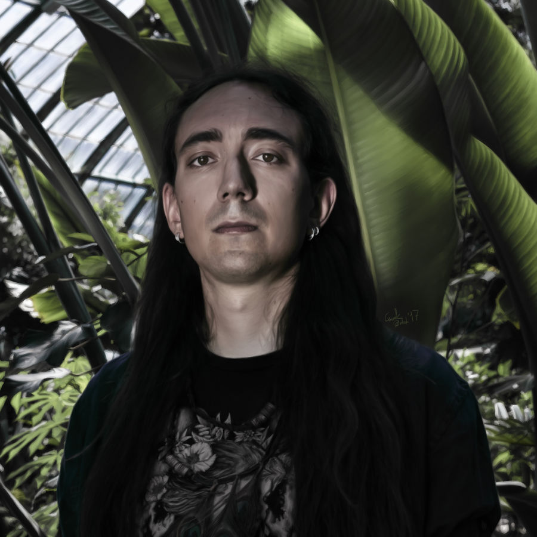

¿Quién soy yo?
¿Mi nombre? Soy Erika Lorena González Cristancho, soy un humano que vive al norte de Bogotá y tiene 28 años. A continuación hablaré más detalladamente sobre mi vida.
¿A qué me dedico?
Existen dos cosas que estoy haciendo todos los días actualmente. Trabajo como "Agente Trilingüe" (Español, Inglés y Alemán) en un call center. El contrato es con Teleperformance, pero el cliente es una plataforma de pagos llamada "Stripe". Por otro lado, estoy estudiando programación.
¿Tengo algún "hobbie"?
Sí, existen muchas cosas que me gusta hacer. Entre ellas están:- Practicar yoga y Acroyoga
- Pintar (con colores y acuarela)
- Escuchar música
- Ver ánime o muñequitos
- Actualmente me estoy certificando como buceadora PADI
¿Cuál es mi comida favorita?
En general me gustan los quesos, pero si hay algo que pudiese comer todos los días sería el pollo guisado.Pollo Guisado
- Primero lavar dos muslos de pollo (sin quitarles la piel)
- Picar el ajo, tomate, cebolla
- Poner en sarten con un poquito de aceite los vegetales picados
- Agregar color, magui y orégano
- Luego agregar el pollo al guiso
- Agregar una taza de agua
- dejarlo a fuego lento durante 30 minutos

| Top Artistas | |||
|---|---|---|---|
| Grimes | Phill Bozeman | Neige | Devin Townsend |
|  |